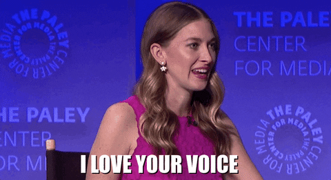

Some international conferences and talks
Mercredis de STMS, Éthique des transformations vocales émotionnelles ou deepfakes vocaux, IRCAM, Paris, France. February 2022.Conférence: Fake News et l'infodémie, L'Ethique des deepfakes vocaux émotionnels. Université Bourgogne Franche Comté. Besançon, France, January 2022.
General communication
Table ronde Assistants, Emo/cobots et réalité virtuelle , DEEPVOICE 2021, Serge Tisseron, JJ Aucouturier, Susana Sanchez Restrepo, Nadia Guerouaou, Catherine Pelachaud, Nicolas Obin. SCAI, Paris, June 24th 2021.Sortie de labo, Rencontres scientifiques #1. French Podcast by Louis Badé. Paris, France, January 2022
Interview on the ethics of deepfakes that you can listen here 
Perception of Smiles in the Voice, Voice Tech Podcast, ep.007, Podcast in English, Paris, France, June 2019
Cracking the Emotional Code, Creative Documentary, Mailys Audouze (2022)
I had the pleasure to be part of the documentary Cracking the Emotional Code by Maïlys Audouze, who followed and filmed the CREAM (Cracking the emotional Code of Music) research project to try to grasp how researchers in sound and emotions live and work. The documentary will be released in 2022.